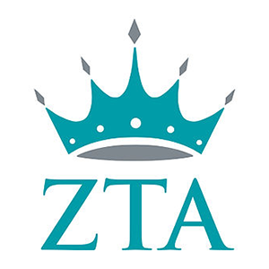

I edit articles approximately 8 hours each week on accuracy, grammar and AP style.
(January 2020-Present)
Freelance Writer, The Sentinel Newspapers
I wrote articles for this now discontinued, local publication under the guidance of former city editor José Umana.
(December 2019 to January 2020)
Staff Writer, Stories Beneath the Shell
I wrote weekly articles in the fall of 2019 on University of Maryland events for this student-run publication and improved my writing and reporting skills. (September 2019-December 2019)
Intern, The Washington Examiner
I interned for Tim Carney, the opinion editor and commentary writer. I wrote blurbs for the opinion pieces and learned the basics of Adobe Premiere.
(May 2018)
Work Experience
Tour Guide, Maryland Images
I help prospective students at the University of Maryland by leading and organizing group tours on campus.
(September 2019-Present)
Diversity and Inclusion Chair, Zeta Tau Alpha
I help the Iota Omega chapter of Zeta Tau Alpha become more aware about diversity and inclusion through different conversations and events.
(September 2019-Present)
Counselor, Sandy Hill Camp
I facilitated and led various high and low elements on the camp’s ropes course after a week of extensive training. I helped campers ages 8 to 16 grow in courage and team work through the different elements. This experience helped me gain greater cultural awareness and collaborative skills after working with other counselors from around the world.
(Summer 2018 and Summer 2019)
Education
Bachelor of Arts, Journalism, University of Maryland, 2022
I am a College Park Scholar in the Media, Self and Society Program. This two-year, innovative living and learning program enables me to explore the dynamics of media theory and its implications on a global scale.
Skills
Photo Editing
I excelled in my photojournalism class and learned how to properly edit in Adobe Lightroom.
Journalism
I copy edit for an independent newspaper on campus. I have experience in reporting on campus. I strive to both write and edit journalism with the utmost accuracy.
Diversity and Inclusion
I received training in diversity and inclusion through the Department of Fraternity and Sorority Life at the University of Maryland. My position as diversity and inclusion chair has helped me establish bonds in my Greek chapter and teach each others about various aspects within diversity and inclusion.
 Bachelor of Arts, Journalism, University of Maryland, 2022
Bachelor of Arts, Journalism, University of Maryland, 2022